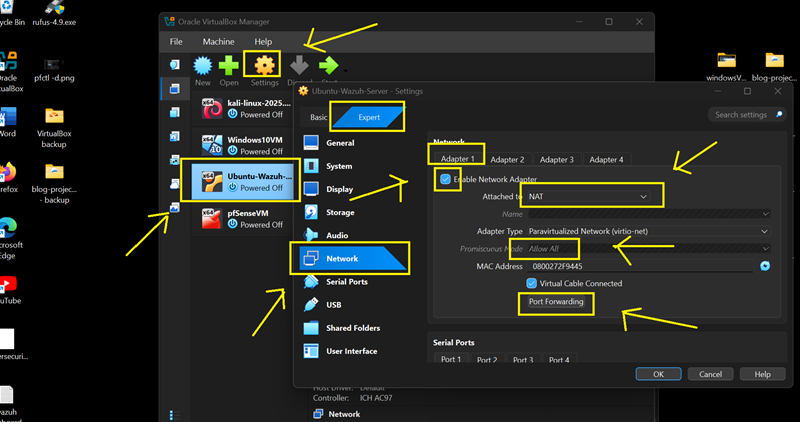
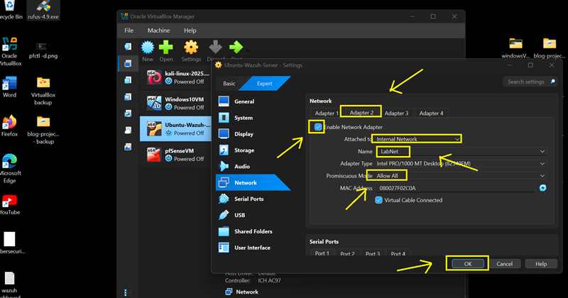
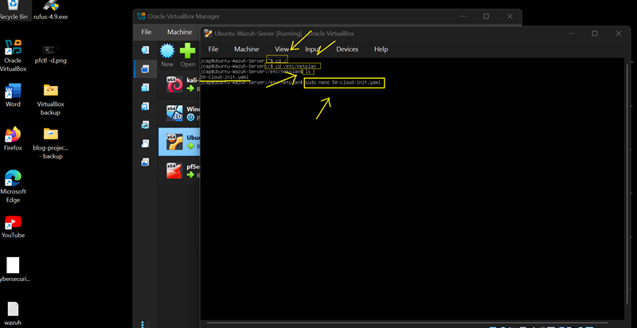
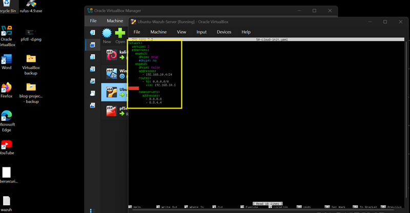
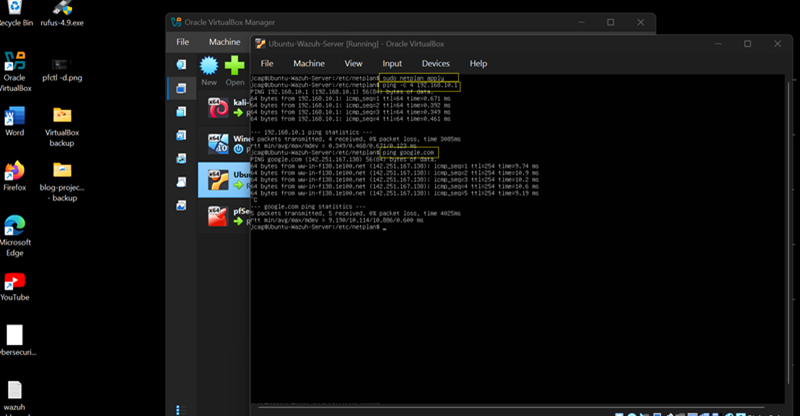
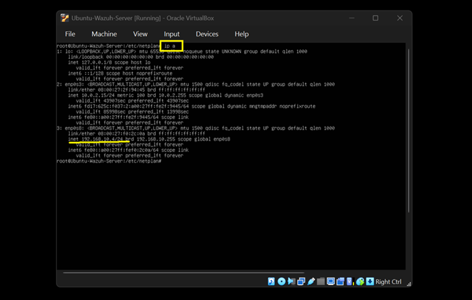
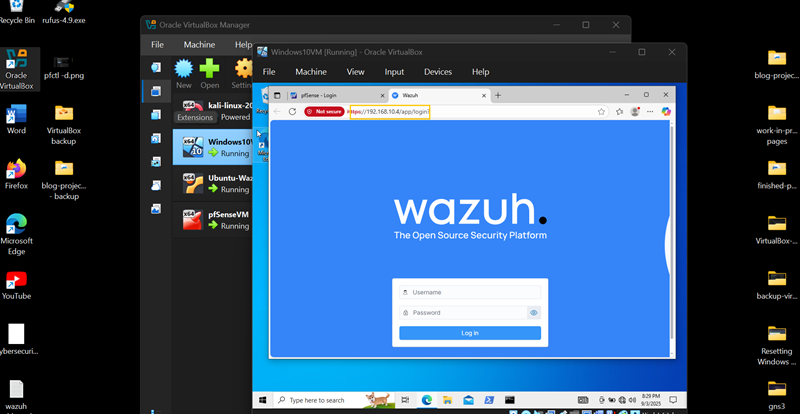
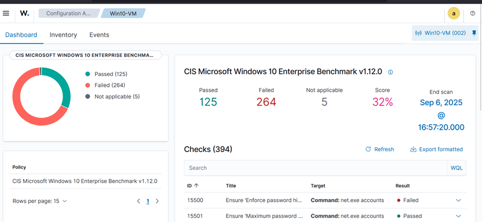

Overview
Wazuh is configured with two network interfaces: NAT for external connectivity and LabNet (Internal Network) for communication with pfSense, Kali Linux, and Windows endpoints.
This enables centralized log aggregation, alerting, and security monitoring in a simulated SOC environment.
Step 1 — VirtualBox Network Adapter Configuration
Adapter 1 (WAN - NAT)
- Enable Adapter
- Attached to: NAT
- Promiscuous Mode: Allow All
- Enable Port Forwarding (optional for dashboard access)

Adapter 2 (LAN - Internal Network)
- Enable Adapter
- Attached to: Internal Network
- Name: LabNet
- Promiscuous Mode: Allow All

Step 2 — Configure Static IP (Netplan)
Edit Netplan configuration:
sudo su
cd /etc/netplan
ls
nano 50-cloud-init.yaml

Static IP Configuration
network:
version: 2
ethernets:
enp0s3:
dhcp4: true
enp0s8:
dhcp4: false
addresses:
- 192.168.10.4/24
routes:
- to: 0.0.0.0/0
via: 192.168.10.1
nameservers:
addresses:
- 1.1.1.1
- 8.8.8.8
Save file: CTRL + X → Y → ENTER

Step 3 — Apply Configuration & Test
sudo netplan apply
ip a
ping -c 4 192.168.10.1
ping -c 4 google.com
Confirm assigned IP: 192.168.10.4


Step 4 — Access Wazuh Dashboard
- Open browser from Kali or Windows VM
- Navigate to: https://192.168.10.4:443


Configuration Complete
Ubuntu Wazuh is now fully configured with a static IP (192.168.10.4) and integrated into the LabNet network. It is ready to collect logs and telemetry from all endpoints in the SOC lab.